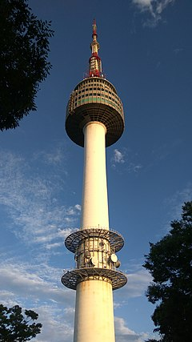
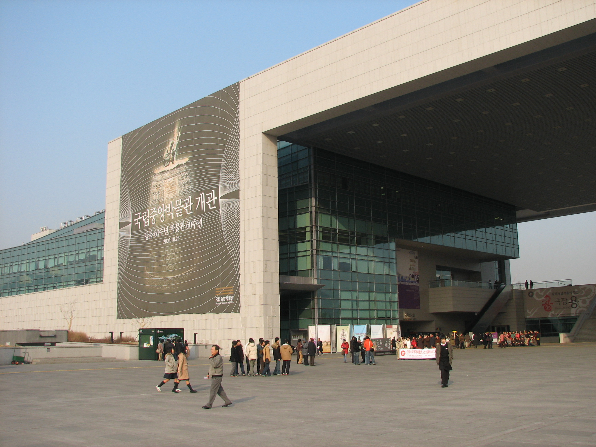

Gwanghwamun Plaza is a public open space on Sejongno, Jongno-gu in Seoul, South Korea.
The plaza was opened on 1 August 2009 by the Seoul Metropolitan Government and is part of the City's plans for environmentally friendly renovation projects such as the Cheonggye Stream and Seoul Plaza.
It is also historically significant as the location of royal administrative buildings, known as Yukjo-geori or Street of Six Ministries and features statues of Admiral Yi Sun-sin of Joseon Dynasty and King Sejong the Great of Joseon.
Gyeongbokgung
Gyeongbokgung was the main royal palace of the Joseon dynasty. Built in 1395, it is located in northern Seoul, South Korea.
Changdeokgung Palace
Changdeok Palace is set within a large park in Jongno-gu, Seoul, South Korea.
It is one of the "Five Grand Palaces" built by the kings of the Joseon Dynasty (1392–1897)..
Bukcheon Hanok Village
Bukcheon Hanok Village is a Korean traditional village in Seoul with a long history located on the top of a hill between Gyeongbok Palace, Changdeok Palace and Jongmyo Royal Shrine.
N seoul tower

N seoul tower is a communication and observation tower located on Namsan Mountain in central Seoul, South Korea.
Namdaemun Market
Namdaemun Market is the largest traditional market in Korea with shops selling various goods.
Myeongdong
Myeong-dong is one of the primary shopping districts in Seoul.
National Museum of Korea

The National Museum of Korea is the flagship museum of Korean history and art in South Korea and is the cultural organization that represents Korea.
COEX MALL
COEX Mall, Asia's largest underground shopping mall, is located in Gangnam district of Seoul and houses a wide range of stores and brands for all ages.